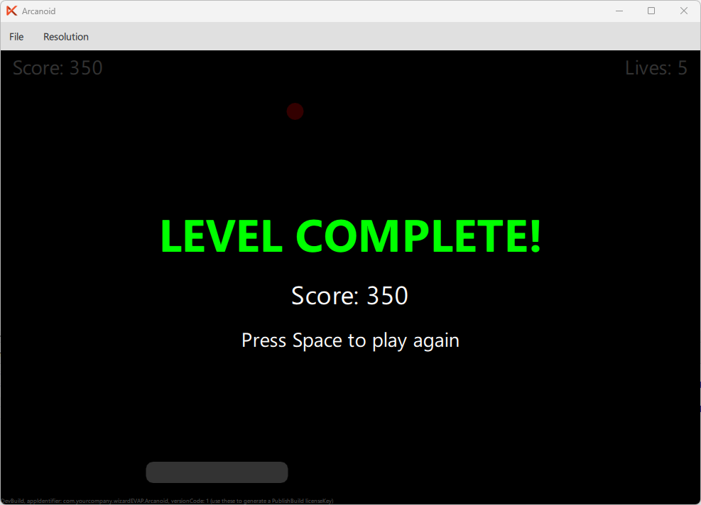

In this part of the tutorial, we will add a "Level Complete" screen that appears when the player destroys all bricks. The game pauses, shows the final score, and lets the player restart by pressing Space.
Add a levelFinished property to gameArea, next to the existing gameOver property:
property bool gameOver: false property bool levelFinished: false
We need a function that checks whether all bricks have been destroyed. Add the following inside gameArea:
function checkLevelFinished() {
for (let i = 0; i < bricks.count; i++) {
let item = bricks.itemAt(i)
if (item && !item.destroyed)
return false
}
return true
}
The function iterates over every brick. If any brick is not destroyed, it returns false. If the loop completes, all bricks are gone and it returns true.
Add levelFinished = false to the initGame() function so the state resets properly on restart:
function initGame() {
score = 0
lives = 5
gameOver = false
levelFinished = false
...
}
The game loop should stop when the level is finished. Update the Timer's running property:
running: !gameArea.gameOver && !gameArea.levelFinished
After a brick is destroyed in the collision logic, check if all bricks are gone. Add the following after the ball.ballSpeedY *= -1 line inside the brick collision block:
// Check if all bricks destroyed if (gameArea.checkLevelFinished()) { gameArea.levelFinished = true ball.ballStuck = true }
When all bricks are destroyed:
levelFinished is set to true, which stops the Timer.Create a new file LevelFinishedScreen.qml in the qml directory. It follows the same pattern as GameOverScreen but with a victory message:
import QtQuick 2.0 Rectangle { id: levelFinishedScreen anchors.fill: parent color: "#CC000000" visible: false property int score: 0 signal restartRequested() Column { anchors.centerIn: parent spacing: 10 Text { text: "LEVEL COMPLETE!" color: "lime" font.pixelSize: 32 font.bold: true anchors.horizontalCenter: parent.horizontalCenter } Text { text: "Score: " + levelFinishedScreen.score color: "white" font.pixelSize: 18 anchors.horizontalCenter: parent.horizontalCenter } Text { text: "Press Space to play again" color: "white" font.pixelSize: 14 anchors.horizontalCenter: parent.horizontalCenter } } }
Key differences from GameOverScreen:
Add the LevelFinishedScreen inside the Scene, next to the GameOverScreen:
LevelFinishedScreen {
id: levelFinishedScreen
score: gameArea.score
visible: gameArea.levelFinished
onRestartRequested: gameArea.initGame()
}
Update the Space key handler to also restart from the level finished state:
if (event.key === Qt.Key_Space) { if (gameArea.gameOver || gameArea.levelFinished) { gameArea.initGame() event.accepted = true } else if (ball.ballStuck) { ball.ballStuck = false event.accepted = true } }
Now pressing Space restarts the game from both the Game Over and Level Complete screens.
